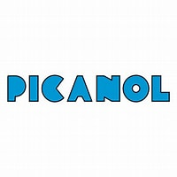
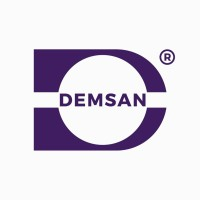
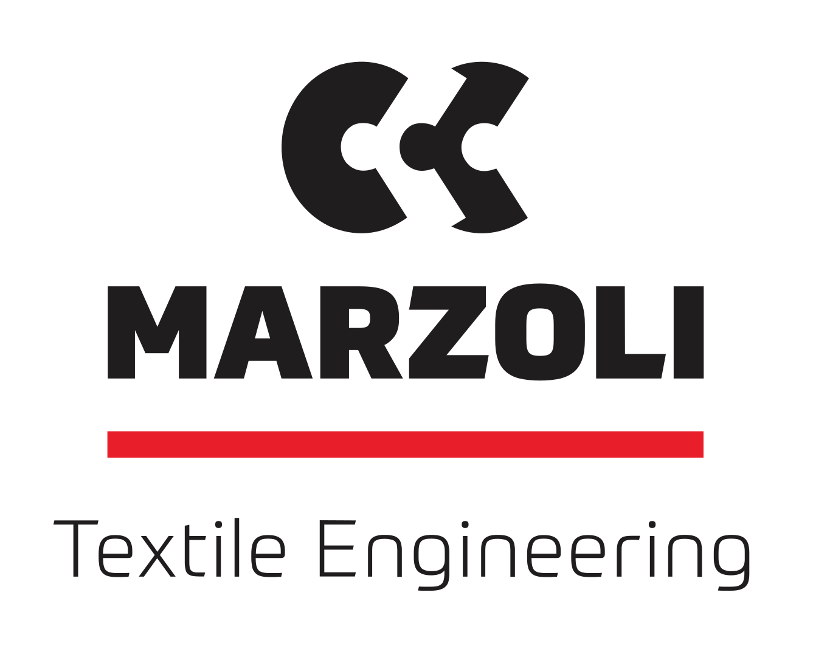

01
Airjet & Rapier Weaving
High-tech weaving machines using airjet and rapier technology — precision engineering combined with high-speed performance.
Airjet Weaving Machines
High-speed airjet weaving for mass production of a wide range of fabrics. Optimized air consumption with superior weft insertion rates and consistent quality.

Rapier Weaving Machines
Versatile rapier technology for complex patterns, technical textiles and specialty fabrics. Ideal for diverse yarn types and intricate weave structures.
02
Sizing & Warping
Direct & sectional warpers, sizing lines for staple, filament and glass fibers, creels, ball warpers and open-width systems.
Warping Machines
Direct warpers, sectional warpers and creels for all yarn types — precision tension control and consistent beam quality.
Sizing Lines
Sizing systems for staple fibers, filament fibers and glass fibers — optimal size penetration and uniform film coating.
Auxiliary Systems
Re-beamers, open-width systems and assembling lines to complete your beam preparation workflow.
03
Quality Control, Inspection & Packing
Advanced fabric inspection, rolling, batching, plaiting, folding and palletizing equipment for flawless end-of-line processing.
Rolling & Batching
Fabric rolling machines, batching machines, and combined rolling-batching-plaiting units for efficient end-of-line processing.

Palletizing & Folding
Single-fold, double-fold and double-four fold palletizing machines, fabric folding & rolling combinations, and tulle sewing machines.
Packing & Finishing
Fabric spreading, packaging, wet rope opening and beam winding machines for complete end-line efficiency.
04
Laboratory Testing
Comprehensive laboratory instruments for precise quality measurement and process validation across textile and spinning applications.
Textile Laboratory Solutions
Complete instruments for fabric testing — tensile strength, color fastness, pilling, abrasion resistance and more.
Spinning Lab Solutions
Yarn testing instruments for evenness, count, twist, hairiness and strength — essential for spinning process control.
Specialty Solutions
Sugar and specialty industry laboratory solutions, rounding out our comprehensive product portfolio.
05
Dyeing Machines
High-performance dyeing systems for uniform color application, energy efficiency, and precise process control across all fabric types.
KTM Krantz Systems
Industrial dyeing machines engineered for consistent, repeatable color results with low liquor ratios and optimized energy consumption.

Rope Dye Range
Rope dyeing systems for denim and specialty fabric production — known for deep penetration and consistent yarn-level coloring.
06
Stenters
Finishing machines for heat-setting, drying and precise width and dimensional stability control — essential for high-quality fabric finishing.
Stenter Frames
Multi-zone stenter frames with precise temperature control, adjustable width settings and energy-efficient air circulation. Suitable for wovens, knits, and technical textiles.
07
Climate & Waste Control
Systems that maintain optimal temperature, humidity and air quality while efficiently managing lint, dust and process waste.
Climate Control
Precision humidification and temperature management systems to keep production conditions stable and product quality consistent.
Waste Management
Lint, dust and fiber waste collection and filtration systems — protecting machinery, workers and the environment from airborne particles.
08
Washing, Bleaching & Mercerizing
High-efficiency open-width washing and ultrasonic treatment systems for superior fabric preparation and finishing.
Open-Width Washing
Open-width continuous washing ranges for efficient desizing, scouring and rinsing with minimal water and energy consumption.
Ultrasonic Treatment
Ultrasonic washing systems that deliver deep cleaning and chemical penetration at lower temperatures, reducing processing time and chemical usage.
09
Spinning
Complete spinning solutions — converting natural or synthetic fibers into yarns of desired thickness, twist and strength.
Spinning Machinery
Full-line spinning solutions covering opening, carding, drawing, roving and ring spinning — engineered for consistent yarn quality and maximum productivity.
